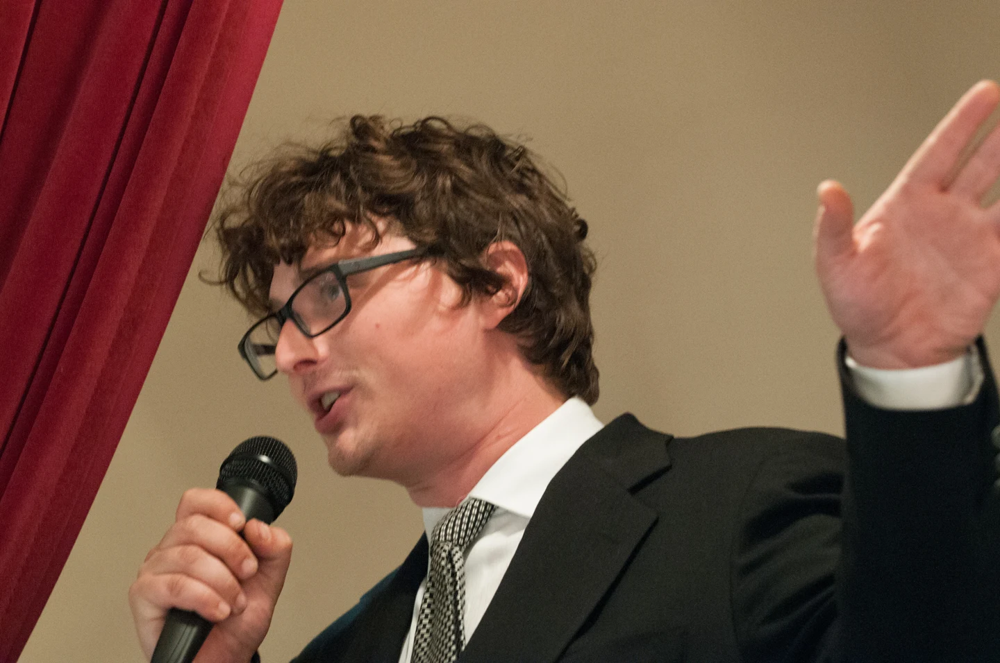

Owner & DJ
Michigan Sounds Good
I started and ran a DJ business for weddings and private events. I coordinated the details with clients, then ran the sound, lighting, and music on event day.

From booking to event day
Client coordination
I handled inquiries, schedules, contracts, invoices, and payments. I worked with clients to understand their plans and kept them informed as event details changed. At weddings, I coordinated with venue staff and other vendors to keep the reception on schedule.
Live sound and lighting
I set up and operated the DJ, sound, and lighting equipment, worked through equipment issues, and adjusted music and timing as the event progressed.
Regular club nights
From 2017 to 2019, I DJed most Friday nights at Orchid Theatre in Ferndale. I powered up the venue’s sound and lighting systems and operated both during my sets. I also DJed most Saturday nights at Club Luna in Royal Oak before the club closed in early 2019.
Website and booking forms
I designed the website and used online forms to collect booking details up front, reducing the back-and-forth with clients.
Former business. The original website is offline.